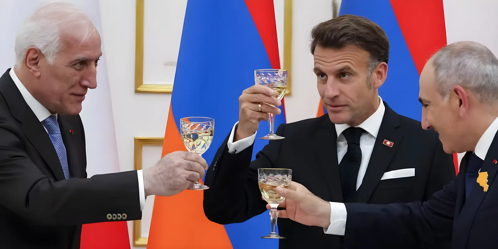

Le 4 mai 2026, Erevan accueille le huitième sommet de la Communauté politique européenne (CPE), rassemblant une quarantaine de délégations venues de tout le continent autour de la devise « Construire l'avenir : unité et stabilité en Europe ». Pour la première fois, la CPE se réunit dans le Caucase du Sud — territoire symbolique où l'Arménie, ancienne république soviétique, confirme son tournant vers l'Union européenne. Le lendemain, le 5 mai, se tient le tout premier sommet bilatéral UE-Arménie.
La Communauté politique européenne est une instance de coopération intergouvernementale lancée en 2022 à l'initiative d'Emmanuel Macron, dans les semaines qui ont suivi l'invasion de l'Ukraine par la Russie. Son ambition : rassembler, au-delà des seules frontières de l'Union européenne, l'ensemble des démocraties du continent — membres de l'UE, candidats à l'adhésion, partenaires comme le Royaume-Uni ou l'Arménie — autour de questions de sécurité, de stabilité et de connectivité.
Le format est délibérément informel : la CPE ne produit ni déclaration finale contraignante, ni conclusions écrites formelles. Ce sont avant tout les échanges bilatéraux, les séances de travail thématiques et la dynamique politique du rassemblement qui en font l'intérêt. En sept éditions précédentes — Prague, Chisinau, Grenade, Blenheim, Budapest, Tirana, Copenhague — le format a progressivement gagné en légitimité. Erevan marque une étape supplémentaire : pour la première fois, le Caucase du Sud entre dans l'espace de la CPE.
Le choix d'Erevan n'est pas anodin. L'Arménie, pendant des décennies étroitement liée à Moscou — membre de l'Organisation du traité de sécurité collective (OTSC) jusqu'à sa suspension de facto —, a entamé depuis 2022 un pivotement stratégique vers l'Union européenne, sous l'impulsion du Premier ministre Nikol Pachinian. En 2025, le parlement arménien a adopté une loi déclarant officiellement l'intention du pays de candidater à l'adhésion à l'UE. La candidature formelle n'a pas encore été déposée, mais les signaux s'accumulent.
En août 2025, l'Arménie et l'Azerbaïdjan ont signé à Washington, sous l'égide de Donald Trump, un accord de paix mettant fin à des décennies de conflit territorial autour du Haut-Karabakh. Ce dégel, salué par l'UE, offre à Erevan une fenêtre d'opportunité pour son rapprochement européen. Macron, en visite d'État lors du sommet, a qualifié ce choix de « courageux », saluant la volonté arménienne de « sortir de l'entrave » et de se tourner vers l'Europe.
Premier sommet de la CPE à Prague, lancé par Macron dans le contexte de l'invasion de l'Ukraine. 44 dirigeants européens se réunissent pour la première fois dans ce cadre inédit.
Deuxième édition à Chisinau (Moldavie) : affirmation du soutien à la Moldavie et à l'Ukraine face à la pression russe. La CPE s'installe comme rendez-vous semestriel.
Signature du traité de paix arméno-azerbaïdjanais à Washington. L'UE salue l'accord et annonce son soutien à la connectivité régionale dans le Caucase du Sud.
Septième sommet de la CPE à Copenhague. Création de la coalition contre les trafics de drogue regroupant quarante délégations.
Huitième sommet à Erevan. Première réunion de la CPE dans le Caucase. Le Premier ministre canadien Mark Carney participe en invité — une première pour un dirigeant non européen.
Premier sommet bilatéral UE-Arménie, coprésidé par António Costa, Ursula von der Leyen et Nikol Pachinian. Lancement d'une nouvelle mission de partenariat UE en Arménie.
Le sommet d'Erevan s'est tenu dans un contexte géopolitique particulièrement chargé : guerre en Ukraine, tensions au Moyen-Orient, fermeture du détroit d'Ormuz perturbant les marchés de l'énergie, retrait annoncé de 5 000 soldats américains stationnés en Allemagne et menace de nouvelles surtaxes douanières américaines sur l'UE. Autant de signaux qui ont donné aux discussions une tonalité de crise.
La question énergétique a occupé une place centrale. La fermeture du détroit d'Ormuz a réactivé le débat sur la dépendance de l'Europe aux importations de combustibles fossiles, déjà mis en avant depuis l'interruption des livraisons de gaz russe en 2022. Ursula von der Leyen a estimé que cette dépendance rendait l'UE vulnérable aux chocs extérieurs et plaidé pour une accélération de la transition vers les énergies renouvelables.
| Thème | Enjeu | Acteurs clés |
|---|---|---|
| Ukraine | Maintien des sanctions, aide militaire, adhésion | Zelensky, Costa, Kallas |
| Défense européenne | Autonomie face au désengagement américain | Macron, Rutte (OTAN) |
| Énergie | Vulnérabilité aux chocs (Ormuz, gaz russe) | Von der Leyen |
| Narcotrafic | Coalition de 40 délégations (2ème réunion) | Macron, Meloni |
| Arménie | Soutien à la souveraineté, rapprochement UE | Pachinian, Macron |
La venue du Premier ministre canadien Mark Carney constitue l'une des nouveautés les plus marquantes du sommet. C'est la première fois qu'un dirigeant non européen participe à une réunion de la CPE. Sa présence traduit un rapprochement stratégique inédit entre Ottawa et les capitales européennes, dans un contexte où les tensions commerciales et politiques avec Washington créent un terrain commun entre le Canada et l'Europe.
« Nous devons appréhender le monde tel qu'il est, et non tel que nous souhaiterions qu'il soit. Nous savons que la nostalgie n'est pas une stratégie. »
— Mark Carney, Premier ministre du Canada, sommet CPE d'Erevan, 4 mai 2026L'un des moments les plus tendus du sommet a opposé, par visioconférence interposée, le président azerbaïdjanais Ilham Aliyev à la présidente du Parlement européen Roberta Metsola. Aliyev, qui participait à distance depuis Bakou, a vivement critiqué ce qu'il a qualifié d'« obsession » du Parlement européen pour son pays, annonçant une suspension de la coopération avec l'institution. Metsola lui a répondu fermement, défendant le rôle du Parlement. Malgré cet échange, plusieurs dirigeants ont salué la participation — même virtuelle — d'Aliyev à un sommet organisé en Arménie, pays avec lequel l'Azerbaïdjan a entretenu des décennies de conflit armé.
« On s'était un peu habitués pendant des décennies à ce que l'Arménie soit en quelque sorte un satellite de la Russie. L'Arménie a fait le choix de sortir de cette entrave et de se tourner vers l'Europe. »
— Emmanuel Macron, président de la République française, Erevan, 4 mai 2026Le sommet d'Erevan illustre la double dynamique qui traverse le continent. D'un côté, une Europe qui cherche à se consolider face à un environnement international hostile — désengagement américain partiel, guerre aux portes du continent, chocs énergétiques. De l'autre, une géographie politique en mutation : l'Arménie qui se tourne vers Bruxelles, le Canada qui s'invite au format européen, et le Caucase du Sud qui entre dans l'orbite de la CPE. La question de fond reste entière : ce format informel, sans textes contraignants, peut-il produire une action collective à la hauteur des crises que l'Europe traverse ?